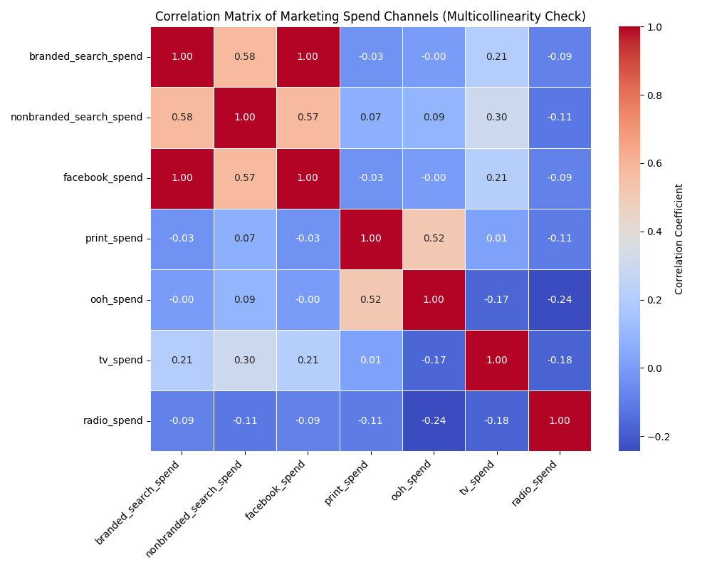
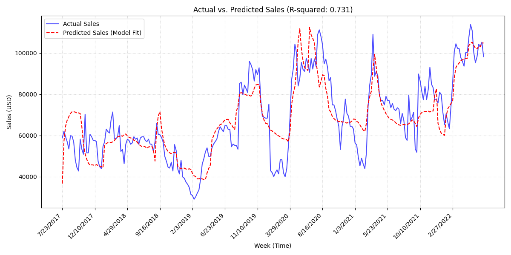

Marketing mix model for bike sales
Which marketing channels actually sell bikes, once you account for ads that keep working after they air and channels that stop paying off at high spend? I modeled five years of weekly data to answer that and turn it into a budget recommendation.
- Question
- How much incremental sales does each channel drive?
- Data
- 260 weeks (Jul 2017 on) · 7 spend channels · weekly sales
- Method
- OLS on geometric adstock (λ = 0.5) and log saturation
- Result
- R² 0.731 · all 6 channels significant (p < 0.01)
1 · A problem the data forced first
Exploratory analysis turned up a perfect correlation (r = 1.00) between branded search spend and Facebook spend. They always moved together, so no model can separate their effects, and regression estimates become unstable. I combined them into one feature, Search & Facebook, which left six channels to model.

After the merge, the condition number (a standard check for features that overlap too much) came out at 461, comfortably stable.
2 · Two transformations that make it a real MMM
Plain regression treats each week's spend as if it only affects that same week, with every extra dollar worth as much as the first. Neither is true of advertising. So every spend series gets two transformations first:
- Geometric adstock carries part of each week's effect into the next:
At = spendt + λ · At−1. With λ = 0.5, half of the effect carries over each week. - Log saturation,
ln(A + 1), builds in diminishing returns: doubling spend doesn't double sales.
Try it: how carryover reshapes a flighting plan
An illustrative 26-week plan, not the project data. Raise λ and each burst's effect lasts longer. The saturated line (rescaled) flattens the peaks, which is why heavy bursts earn less per dollar.
3 · How well it fits

4 · Which channels move sales
Each coefficient is the change in weekly sales for a one-unit increase in that channel's transformed (adstocked, log-saturated) spend. All six are statistically significant.
| Channel | Coefficient | p-value |
|---|---|---|
| Nonbranded Search | 27,397.20 | < 0.0001 |
| Search & Facebook | 10,891.06 | < 0.0001 |
| Radio | 1,415.73 | < 0.0001 |
| TV | 750.99 | 0.0052 |
| OOH | −749.44 | 0.0030 |
| −918.53 | < 0.0001 |
5 · What I'd recommend
- Fund digital search first. Nonbranded search and the combined search and Facebook channel drive by far the most incremental sales.
- Audit outdoor and print. Both show significant negative lift. That rarely means ads hurt sales. More often, spend was timed into weak seasons or the creative and placement aren't working. Either way, it needs a closer look before the next budget cycle.
Caveat I'd raise with stakeholders: λ = 0.5 was fixed for every channel. TV and radio usually decay more slowly than search, so a next iteration would fit λ per channel and test how sensitive the ranking is to it.
6 · Reproducible by default
The whole analysis is one script, run_analysis.py. A GitHub Actions workflow re-runs it whenever the project changes and commits the refreshed charts and results back to the repo, so the numbers on this page always come from the current code.